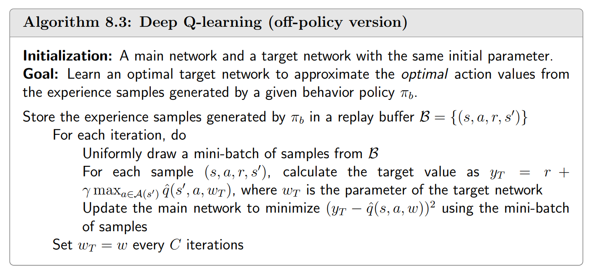

Deep Q-learning = Q-learning + Value approximation
我们希望最小化的目标函数是
$$ J(w) = \mathbb{E}\bigg \{ \big( R + \gamma \max_a \hat q(S',a,w)-\hat q(S,A,w) \big)^2 \bigg \} $$注意到目标函数的 $w$ 参与了 $\max$ 的计算，对这玩意求梯度很困难，因此我们假装 $R+\gamma \max_a\hat q(S',a,w)$ 是一个定值 $R+\gamma \max_a\hat q(S',a,w_T)$。$w_T$ 就是 target network 的参数。
两个网络
Main network 和 target network，这是为了方便求梯度，也方便各种深度学习包自动处理损失函数的梯度。
经验回放
Experience replay 把样本打乱再让神经网络学习，而非直接把按时间顺序得到的样本给神经网络， 因为我们希望样本是i.i.d.的，这样能让随机梯度下降靠谱一些。如果直接按时间顺序提供样本，样本会有强烈的时序关系。

评论区